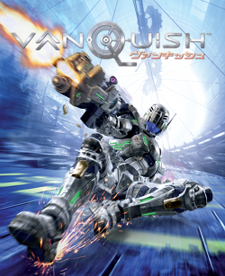

Vanquish é um jogo de ação em terceira pessoa conhecido por sua jogabilidade extremamente rápida, focada em movimentação dinâmica e combate intenso com armas de fogo. O jogador controla Sam Gideon, um soldado equipado com uma armadura avançada que permite deslizar em alta velocidade pelo campo de batalha e desacelerar o tempo durante momentos críticos. O grande destaque do jogo é o sistema de movimentação, que incentiva o jogador a atacar constantemente enquanto se reposiciona com agilidade. As batalhas são frenéticas, exigindo reflexos rápidos e uso estratégico das habilidades disponíveis. Além disso, o jogo apresenta uma boa variedade de armas, que podem ser melhoradas ao longo da campanha. Vanquish também combina elementos de cobertura com ação agressiva, criando um estilo único dentro do gênero de tiro. Os cenários futuristas e os inimigos robóticos contribuem para a identidade visual do jogo. No geral, é uma experiência curta, porém intensa e altamente memorável.
16+ - recomendado para maiores de 16 anos
A história de Vanquish se passa em um futuro onde uma estação espacial utilizada para coletar energia solar é capturada por um grupo de insurgentes. Esses inimigos utilizam a tecnologia da estação para lançar um ataque devastador contra a Terra, colocando o mundo em risco. Sam Gideon é enviado junto com forças militares para retomar o controle da estação e impedir novos ataques. Durante a missão, ele enfrenta exércitos de robôs e soldados inimigos altamente armados. Ao longo da campanha, surgem conflitos políticos e militares que ampliam a escala da ameaça. A narrativa é direta e focada na ação, com momentos cinematográficos e sequências intensas. Os personagens apresentam personalidades marcantes, contribuindo para o desenvolvimento da história. Sam mantém uma postura confiante e determinada diante das situações de perigo. A trama mistura ficção científica com ação militar, criando um ritmo acelerado do início ao fim. Apesar de simples, a história cumpre bem seu papel dentro da proposta do jogo.
19 de outubro de 2010
Entre R$30 e R$100
Aproximadamente 20 GB